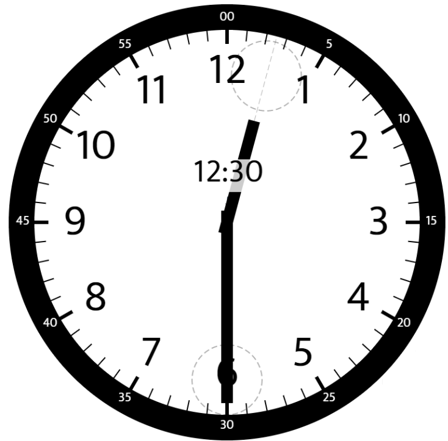
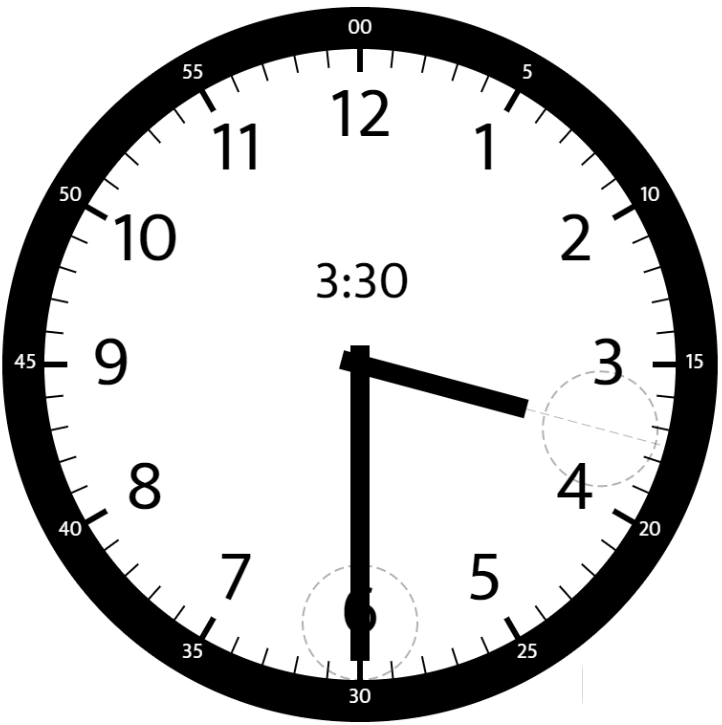
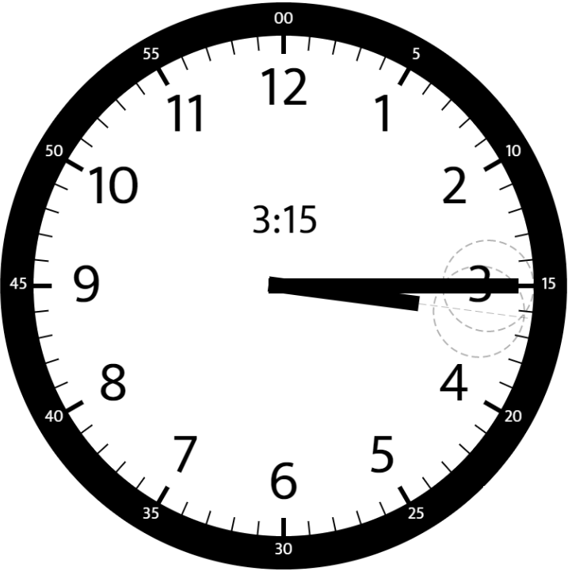

时钟指针的夹角
题目
给你两个数 hour 和 minutes 。请你返回在时钟上，由给定时间的时针和分针组成的较小角的角度（60 单位制）。
示例 1：

输入： hour = 12, minutes = 30
输出： 165
示例 2：

输入： hour = 3, minutes = 30
输出； 75
示例 3：

输入： hour = 3, minutes = 15
输出： 7.5
示例 4：
输入： hour = 4, minutes = 50
输出： 155
示例 5：
输入： hour = 12, minutes = 0
输出： 0
提示：
1 <= hour <= 120 <= minutes <= 59- 与标准答案误差在
10^-5以内的结果都被视为正确结果。
/**
* @param {number} hour
* @param {number} minutes
* @return {number}
*/
var angleClock = function(hour, minutes) {
};参考答案
解题思路
以12点为界限来计算角度，首先计算时针到12点的角度，就等于整数点数模12（因为12应该取0）加上分钟/60在乘上360/12。比如12:30 就是(0+1/2)360/12=15度。
在计算分钟到12点的角度，就是分钟数360/60。之后求这两个角度差的绝对值就是夹角，如果夹角大于180则再求一次补角返回即可。
代码
/**
* @param {number} hour
* @param {number} minutes
* @return {number}
*/
var angleClock = function(hour, minutes) {
// 每分移动6°
let oneMinAngle = 6;
// 每小时移动30°
let oneHourAngle = 30;
// 分针移动的角度
let minutesAngle = oneMinAngle * minutes;
// 时针移动的角度 并且防止12点 所以 hour % 12
let hourAngle = (hour % 12 + minutes / 60.0) * oneHourAngle
// 用时针的角度减去分针的角度，得其绝对值
let diff = Math.abs(hourAngle - minutesAngle);
// 返回最小值
return Math.min(diff, 360 - diff);
}